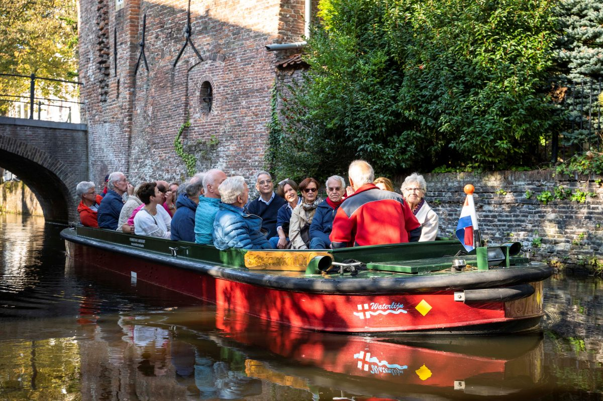

Stichting Waterlijn
Stichting Waterlijn is een organisatie, helemaal gerund door vrijwilligers. De stichting is in 1996 opgericht, en bestaat dus al meer dan 25 jaar.
>
We beschikken over 7 boten, in grootte variërend van 12 tot 44 passagiers. Alle boten varen elektrisch, goed voor het milieu en prettig voor onze gasten.
Er wordt gevaren over 4 standaard routes door de historische binnenstad, waarvan één naar kinderboerderij de Vosheuvel, door de schitterende natuur van park Randenbroek.
Ook zijn er Themavaarten. Dat is een combinatie van een mooie vaart en een bezoek aan een bijzondere plek of een mooie bezienswaardigheid.